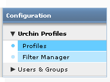
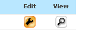
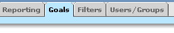
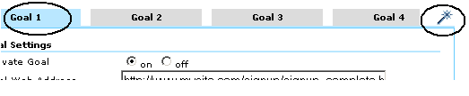
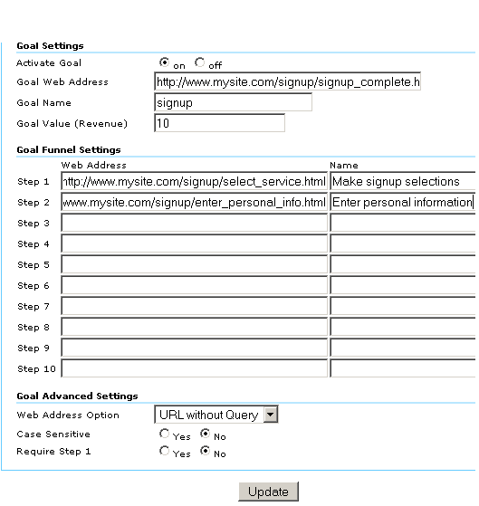

Como definir metas de conversão
- Uma meta é uma página do site que um visitante acessa assim que ele compra ou conclui outra ação desejada, como uma inscrição ou um download.Para que o Urchin possa calcular as métricas de conversão da meta, você deve definir uma ou mais metas.Uma meta é definida com as seguintes informações:
- URL da página da meta
- Especifique uma página que possa ser acessada somente se uma meta for alcançada.No caso de uma meta de inscrição, por exemplo, a página de meta deve ser a página de agradecimento.Se a página da meta puder ser acessada por visitantes que não atingiram a meta, as taxas de conversão vão ter um aumento artificial.
- um nome para a meta
- Especifique um nome que você possa reconhecer ao visualizar os relatórios.Exemplos de nomes que podem ser usados: "inscrição para receber e-mails" e "download do artigo ABC".
- o funil definido
- Você pode especificar até dez páginas em um funil definido.Essas páginas representam o caminho pelo qual os visitantes devem seguir para converter para a meta.A definição dessas páginas permite ver com que freqüência os visitantes abandonam as metas e onde eles desistem.No caso de uma meta de e-commerce, essas páginas podem ser a página de início do Checkout, a página de informações de endereço de entrega e a página de informações do cartão de crédito.
- um valor de meta, se a meta não for uma transação de e-commerce
Para metas de e-commerce, deixe o campo "Valor da meta" em branco, conforme descrito a seguir, e configure sua página de recibo de compra, conforme descrito em Como faço para monitorar transações de e-commerce?.
- Para metas não relacionadas a e-commerce, o Urchin utiliza seu valor de meta atribuído para cancelar o ROI, a Pontuação média e outras métricas.Uma boa maneira de testar a meta é avaliar a freqüência com que os visitantes que atingem a meta se tornam clientes.Por exemplo, se a equipe de vendas conseguir fechar vendas de 10% das pessoas que solicitaram contato e o valor médio de transação for US$ 500, você poderá atribuir US$ 50 (10% de US$ 500) à meta "Fale comigo".Em compensação, se apenas 1% dos cadastros em listas de e-mail resultar em vendas, você poderá atribuir apenas US$ 5 à meta "inscrição para receber e-mails".
Para configurar suas metas:
Faça login na sua conta do Urchin 6 e clique em Configuração, no canto superior direito da tela.
- Clique em "Perfis do Urchin" e em "Perfis".

- Clique no botão "Editar" para editar o perfil do seu site.

- Clique na guia "Metas".

- Edite uma meta clicando em uma das quatro guias de metas na parte superior da tela.Em seguida, clique varinha mágica na parte superior para ativar o "Assistente de definição de meta".

- No Assistente, selecione um número de etapa ou "Meta" nas guias, na parte superior da tela.Utilize o navegador incorporado ao Assistente para navegar até a página que você deseja definir como uma etapa ou meta de funil.Para selecionar a página como a etapa 1, clique em "Adicionar esta página como etapa 1".Repita esse processo para cada etapa em seu funil.Clique em "Definir esta página como meta de conversão", para definir a página como a meta e fechar o Assistente.
Depois de fechar o Assistente, as páginas selecionadas serão exibidas nos campos "Etapas" e "Endereço da web da meta", conforme mostrado abaixo.Você também pode inserir e editar URLs de página diretamente na tela "Metas".
Para definir uma meta de E-commerce, defina sua página de recibo como a meta e deixe o campo "Valor da meta (receita)" em branco.